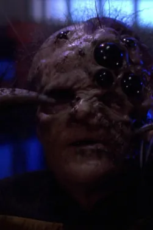

The genetics
The episode is built on a genetic premise. A routine gene-activating treatment, a synthetic T-cell meant to switch on one dormant immunity gene in Barclay, mutates because of an anomaly in his genes, becomes transmissible and switches on all the dormant genes of whoever it infects; Data explains that these introns preserve sequences from millions of years of evolution, so the crew 'de-evolve' into ancestral forms. Genetic medicine also provides the solution, as Data designs a retrovirus that restores each person's genetic pattern, and Crusher closes the episode by naming the condition 'Barclay's protomorphosis syndrome' and admitting the fault was hers. The doctors are well-meaning professionals and the tone mixes horror with comedy. The science is fanciful: writer Brannon Braga used introns because their function was then poorly understood, but they do not contain dormant ancestral bodies, and evolution cannot be run backwards in an individual.
How genetics is portrayed
- Overall portrayal of genetics
- mixed A well-meant genetic treatment causes the catastrophe and a genetic cure ends it; both are the work of sympathetic Starfleet professionals, and the episode closes on a light, joking note rather than an ominous one.
- Outcome of the genetic intervention
- mixed The gene-activating treatment mutates and turns the crew into regressed creatures, with one crewman killed and Crusher badly injured, but Data's genetic retrovirus fully restores everyone.
- Dr. Beverly Crusher
- hero Aim: benevolent (positive). As the Enterprise's chief medical officer she injects Barclay with a synthetic T-cell to activate a dormant immunity gene against a flu; it mutates and causes the outbreak, and she later admits the fault was hers, but she remains a sympathetic regular character. Affiliation: Starfleet.
- Data
- hero Aim: benevolent (positive). Data diagnoses the random activation of dormant genes and designs a retrovirus from amniotic-fluid antibodies that he releases through the ventilation system, restoring the whole crew.
The story
While Captain Picard and Data leave the Enterprise in a shuttle to recover a stray photon torpedo, Dr. Crusher treats Lieutenant Barclay for a mild flu by injecting a synthetic T-cell that activates a dormant immune gene. Soon crew members behave strangely: Troi feels cold and thirsty, Riker cannot concentrate, and Worf turns hot and aggressive, bites Troi and spits venom that injures Crusher, who is put in stasis. When Picard and Data return three days later, the ship is adrift and most of the crew have regressed into earlier life forms: Troi into an amphibian, Riker into a caveman, Barclay into a spider. Data finds that the T-cell has mutated into a contagious agent that activates dormant genes at random. As Picard himself begins to change, Data uses antibodies from the amniotic fluid of a pregnant nurse to make a retrovirus that restores everyone.